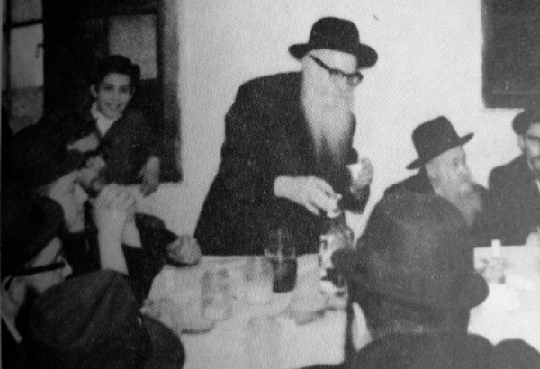

A Youthful Chassid Until the End
About a Chassid, a baal mesirus nefesh, the author of L’Sheima Ozen, R’ Shneur Zalman Duchman a”h. * To mark his passing on 8 Adar 5730.

The Chassid, R’ Shneur Zalman Duchman, was born in Homil on 11 Elul 5651/1891 to his parents, R’ Dovber Menachem Mendel and Mrs. Feige Rishe. He was taught by his grandfather, R’ Mordechai Yoel Duchman of Homil, who was one of the yoshvim (married full-time students) by the Tzemach Tzedek.
At the young age of fourteen, he went to Yeshivas Tomchei T’mimim in Lubavitch. There, in the proximity of the Rebbe Rashab, he acquired his main chinuch and Chassidus. After marrying Chaya Grunya Minkowitz, daughter of R’ Leima, he moved to Homil. His father was not present at his wedding since he had succumbed to typhus that was prevalent in Russia at the time.
Every year, he would go to the Rebbe Rashab for the Yomim Nora’im, and sometimes he would go more than once a year. With the passing of the Rebbe Rashab on 2 Nissan 5680, he continued traveling to the Rebbe Rayatz in Rostov.
After the Rebbe Rayatz had to move to Leningrad, he moved there too, and lived not far from the Rebbe. During the Rebbe’s imprisonment in Sivan 5687, he did not move from the Rebbe’s house. He was among those to whom the son-in-law to be (our Rebbe) gave handwritten manuscripts to hide from the authorities.
When the Nazis began their invasion of Russia, he was in Leningrad. Due to the terrible German bombing which destroyed the city, the Duchman family left for Samarkand where many Lubavitcher Chassidim had escaped from the war. The Duchman family left Russia in the mass migration of 1946-7, going from Lemberg to Cracow to the refugee camp in Germany. In 1949, he received a letter from Ramash telling him to collect and write his stories.
R’ Duchman received instructions from the Rebbe to go to isolated communities in the United States in order to inspire them to do Torah and mitzvos. There, he told them his stories which made a great impression.
He wrote his stories in a book called L’Sheima Ozen which was printed in 5723. It is a compilation of stories about the Chabad leaders, some of which he heard himself and some of which he heard from his grandfather, R’ Mordechai Yoel who heard them from R’ Yitzchok Isaac of Homil, the rav of Homil and one of the distinguished Chassidim of the Alter Rebbe. The book was printed 150 years after the passing of the Alter Rebbe.
The Rebbe was greatly involved in the printing of this book, starting with the initial writing and then the preparations for printing and publishing. R’ Shneur Zalman would submit his memoirs for the Rebbe’s perusal and the Rebbe would respond, sometimes making notes in the margins. The Rebbe examined most of the book.
Many stories and materials that R’ Shneur Zalman prepared were not published in his lifetime. When his grandchildren published the second edition of his book after his passing, they included these stories.
When still known as the Ramash, the Rebbe wrote him in a letter in the name of the Rebbe Rayatz, asking that he send copies of whatever he writes and at the end of the letter the Rebbe writes: You sign your letter as the grandchild of R’ Mordechai Yoel of Homil. Therefore, be so good as to send your memories, what you know of your grandfather and his brothers, because it has long been the wish of the Rebbe, my father-in-law, to collect information about the elder Chassidim and surely, over time, this will also be a merit for the public.
R’ Duchman served as a shadar to raise money for the Chabad institutions. He served as chazan in the Rebbe’s minyan many times. He was also the one the Rebbe chose to say Kaddish for his brother, R’ Yisroel Aryeh Leib, since he did not want his mother, Rebbetzin Chana, to know of his passing.
R’ Duchman passed away on 8 Adar 5730/1970.
HOSPITALITY UNDER STRAITENED CIRCUMSTANCES
During the time he lived in Leningrad, it was very hard to obtain proper living quarters. Generally, several families lived together in one apartment with a shared kitchen. Fortunately, R’ Zalman got an apartment in the home of a doctor. It was separate and did not have to be shared with non-Jews. He had a weaving machine like many of Anash in Russia in those days, with which he barely supported his family. The government would give them the raw material with which to make clothing and the Chassidim would work on it and be paid by the government. With this work, they were not forced to desecrate the Shabbos. R’ Zalman would stand next to his machine, one hand moving the wheel and the other hand holding a T’hillim or Tanya as the sweat poured down his face.
The household furnishings were meager. When his wife asked him to replace the torn upholstered chair with a new one, he said, “Why be upset about it? Move it from the guest room to the side room where nobody will see it and you won’t have anything to be ashamed of.”
Despite their poverty, he would bring unfortunate people home and give them food and a place to sleep. He divided the big room with a curtain, half for his family and half for the guests. When his wife once asked him why he was never able to bring distinguished guests for the Shabbos meal he said, “What can I do? When I finish davening it is already too late and there is no one in shul. As I walk home, I meet pathetic and sick people on the street whom nobody helps and they are starving and thirsty. Should I leave them to die of hunger in the street?”
A Chassid once came to his house and brought along another Jew. R’ Zalman brought the guest to the special room and in the evening, he said to his wife that all of them had to sleep in the other room so as not to disturb the guest. Nobody knew who this special guest was, for whom R’ Zalman provided a special room and made the family crowd into the other room, but they knew that when it came to guests, they couldn’t ask too many questions.
In the middle of the night, the family was frightened when they heard groans. Mrs. Duchman immediately realized that the guest suffered from an extreme case of epilepsy. Throughout the night, R’ Zalman sat near the guest and kept an eye on him. It was only after the guest left the house that the family understood why R’ Zalman had given the man his own room. He did not want them to pay undue notice to the sick guest, lest he be ashamed.
R’ Zalman’s tremendous midda of chesed is something he transmitted to his children. He taught them to make supreme efforts in this regard. Those who visited his home often said that it happened that his family withheld bread from themselves and gave it to their guests. They also often offered their beds while they found a corner somewhere and lay on the cold floor.
MESIRUS NEFESH
R’ Zalman’s home, which was in the center of the city, was open not only to guests and those bitter of heart, but was also a place of Torah for many. Various shiurim took place there, in Nigleh and Chassidus, in the morning and evening. Hosting shiurim in those days entailed danger to life. More than a few were arrested and exiled for the crime of disseminating Torah and Chassidus. Many of them did not merit Jewish burial, but R’ Zalman was fearless and continued having these shiurim.
In his building lived a government appointed concierge, whose job it was to snoop and know all the goings-on. He knew good and well where all those bearded Jews were heading when they showed up twice a day.
In the end, the Yevsekim decided to arrest R’ Zalman. Every day, a Jewish interrogator by the name of Sarkin went to his house and took him to the NKVD offices. There he was harshly interrogated regarding all his Jewish activities.
R’ Zalman firmly refused to say anything. Each day he was brought to the NKVD offices and every night he returned home. He endured torture during these interrogations. They would thrust his fingers into the door frame and would move the door, opening and closing it on his fingers. Signs of this could be seen years later when there were no fingernails left on his fingers. His daughter Rochel would accompany him to interrogations and wait near the gate. Her father never told her what he underwent for he did not want to cause his family anguish.
THE BLESSING
THAT SAVED HER
In Tishrei 5688/1927, when the Rebbe Rayatz prepared to leave Russia, Chassidim went to take leave of him. Numerous Chassidim went to Leningrad and thought, who knows whether we will be able to see the Rebbe again? Among the Chassidim was R’ Zalman, of course, who took his eight year old daughter Rochel with him. She received a warm bracha from the Rebbe as he placed his holy hands over her head.
During the war, when the Germans blockaded Leningrad and bombed it mercilessly, the administration of the local university sent students to dig ditches on the front lines against the Germans. Rochel was one of those who was sent. The climate was harsh with great humidity and mud wherever you turned. They worked for a month at backbreaking labor until they finished the digging.
Rochel, who was a weak girl, became very sick. Her hands and feet were paralyzed. When they saw her serious condition, two students, one of them Jewish, volunteered to bring her to the train that went to Leningrad so she could be hospitalized. When they arrived at the train station, they discovered that it had been bombed and destroyed by the Germans. You could barely tell that there was once a train station there. They stood there and did not know what to do.
The station guard told them that a freight train would be by shortly. This train would not stop but would slow down as it passed the station. He advised them to stand ready and the minute the train passed, they should jump on together with the sick girl.
They did as he suggested and when the train arrived they jumped aboard and traveled to Leningrad. The girl was hospitalized and her condition improved until she was out of danger and was able to walk with a cane. The day they brought her to the train station, droves of German bombers flew over the work site and mercilessly bombed the place. The five hundred students who were there were all killed. The only survivors were the three of them who had left a few hours earlier.
When R’ Zalman cried over his children who disappeared during the war, he would lament and say that if he had taken his sons to the Rebbe before he left Russia, they too would have been blessed and would have remained alive.
A YOUNG ELDER CHASSID
Even after R’ Zalman left the Soviet Union and arrived in the United States, he had no idea he was in the land of endless opportunity. He seemed to think he was in Lubavitch or Rostov. He did not know English although he lived in America for many years. America to him was the hundred meters between his house and Beis Chayeinu.
Despite his advanced age, he was young in spirit. He never gave in to his age and always lived like the youngsters. Not only was he likely to bend and humble himself before any young man, he felt comfortable in their company. In the company of the young bachurim he seemed to shed his seventy years and was one of the group. He never groaned or raised his voice when he was pushed by the other Chassidim in the Rebbe’s presence.
He went to sleep at eleven at night and was up at three. He had various shiurim until he went to daven: weekly Zohar, the Chassidishe parsha, the weekly T’hillim. He finished this every week.
After immersing and learning another shiur, he went to daven Shacharis in the small beis midrash upstairs in 770. He would listen to the t’filla b’tzibbur and then go off to his corner and daven for hours every weekday and all the more so on Shabbos. He never finished davening on Shabbos before two or three in the afternoon.
In the US he continued his deeds of chesed and hospitality. At the big farbrengens on Simchas Torah in the years 5718-5724, when the Rebbe taught niggunim and the farbrengens ended at six in the morning, R’ Zalman would run to his house and bring hot drinks to revive people. He did this throughout Sukkos too, when guests would be shivering in the cold in the sukka next to 770.
SPECIAL RELATIONSHIP WITH THE REBBE
On Sukkos 5712/1951, a few weeks after he arrived, R’ Zalman told the Rebbe that in Leningrad he never had his own Dalet minim; he would say a bracha over the Rebbe’s lulav and esrog. He asked that this year too, he be allowed to say the bracha over the Rebbe’s Dalet minim. Permission was granted and he was the first Chassid to do so. After that, it became a practice for Chassidim in 770 to say the bracha over the Rebbe’s lulav.
When they brought Rebbetzin Chana from the hospital before her funeral, the Rebbe asked him to keep watch over the house and its contents and said to R’ Zalman’s son Yisroel, “You probably won’t leave your father alone.”
Once at a farbrengen with many guests, the Rebbe looked particularly serious. R’ Zalman said to the Rebbe: How is it possible that such honored guests came to the Rebbe and the Rebbe is in such a mood?
The Rebbe smiled and immediately asked to allow the guests to approach and told them to say l’chaim and showed them other signs of closeness. He then said to R’ Zalman, “Nu, R’ Zalman, who else needs to be drawn close?”
R’ Zalman would make the announcements at the farbrengens in his special way and tune, “Now the order will be as follows…” The Rebbe looked obviously pleased when R’ Zalman did this. One year, on Motzaei Rosh HaShana, when he finished his announcements, the Rebbe suddenly closed his eyes and continued in the same niggun, “Now the order will be as follows: now we are going from Rosh HaShana and entering a good and blessed year. Then Hashem will give everyone a good year. Then He will give them their hearts’ desires for good. Then He will send Moshiach Tzidkeinu …”
One time, during the farbrengen, the Rebbe noticed R’ Zalman’s eyes scanning the crowd. The Rebbe said to him with a smile, “R’ Zalman, who are you looking for? The grandchildren?” From then on, R’ Zalman was careful to keep his eyes fixed only on the Rebbe during farbrengens.
At one of the farbrengens there was a commotion because of the tremendous crowding. R’ Zalman tried to quiet the crowd when he announced in his loud voice, “Sha shtiller, sha shtiller.” Someone present who was annoyed by this angrily told him not to raise his voice. The Rebbe responded, “R’ Zalman’s ‘sha’ does not disturb.”
At one of the Shabbos farbrengens, R’ Zalman drank more than usual and was quite tipsy. When the Rebbe went down to daven Mincha, he stopped the Rebbe and wanted to tell him something. The Rebbe told him that every moment of his was precious and if R’ Zalman stopped him, then he would have to repay every minute with a story. R’ Zalman accepted this and after holding up the Rebbe for two minutes he sent two stories the next day.
When he reached seventy years of age, he went to the Rebbe and asked to be excused from his position as chazan for Shacharis on Rosh HaShana and Yom Kippur since he was not blessed with a loud voice and he cried a lot and it was hard for the congregation to hear him. The Rebbe said, “You are not the balabus of Shacharis and you cannot be released from it.”
“I WILL MENTION IT AT THE GRAVESITE” IS A REAL BRACHA!
The following story happened in the early period after the Rebbe accepted the Chabad leadership, in 5712. As mentioned earlier, R’ Zalman was a shadar. In this role, he would travel several weeks a year, usually between Pesach and Shavuos, to Toronto, where his daughter and son-in-law, R’ Eli Lipsker, lived. Although he asked the Rebbe to be excused from this job, saying he did not understand English and there was no purpose in his traveling there, the Rebbe told him to continue and said that just having people see a Jew like him was reason enough to go.
One year, while he was in Toronto, a young couple came to his daughter’s house and asked to speak to him. They told him that they were married for seven years and still had no children and since he was the Rebbe’s shadar, they asked him to ask the Rebbe for a bracha for them. R’ Zalman promised to do so.
When he returned to 770, he did not just write a note. He wanted to personally ask for a bracha on their behalf. He stood in the hallway in the entrance to 770 near the door to the elevator while the Rebbe davened Mincha in the beis midrash upstairs. When the Rebbe came out and walked to his room, R’ Zalman approached him and told about the couple in Toronto and their request.
The Rebbe asked R’ Zalman for their names and then said, “When I will be at the Ohel I will mention them.”
“But Rebbe,” said R’ Zalman, “why not give them a real bracha?” The Rebbe did not respond but went to his room.
A year went by and R’ Zalman returned to Toronto. On his first day there, the couple came to visit, holding a baby that had been born a few weeks before. They excitedly showed R’ Zalman the baby and told him that they knew she was born thanks to the Rebbe’s bracha.
“It is not yet a year since we received the Rebbe’s bracha and we already have our baby,” they said. They thanked R’ Zalman for being a good messenger and asking the Rebbe for bracha on their behalf. Although they weren’t particularly wealthy, they gave R’ Zalman an $18 donation (a nice sum back then).
When R’ Zalman returned to Crown Heights, he went to 770 to tell the Rebbe about the birth of the baby. He stood near the door of the elevator once again and waited for the Rebbe to come out after Mincha.
When the Rebbe appeared, R’ Zalman went over and said, “The Rebbe surely remembers that last year I asked for a bracha for a young couple in Toronto who did not have children. I am happy to report that the Rebbe’s bracha was fulfilled and they had a baby girl.”
The Rebbe did not respond and continued to his room. When the Rebbe was about to open the door to his office, he turned around and said with a smile, “Nu, R’ Zalman, is azkir al ha’tziyun a real bracha?”
D. Levanon. "A Youthful Chassid Until the End." Beis Moshiach, no. 920 (March 19, 2014).